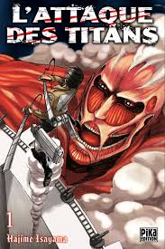
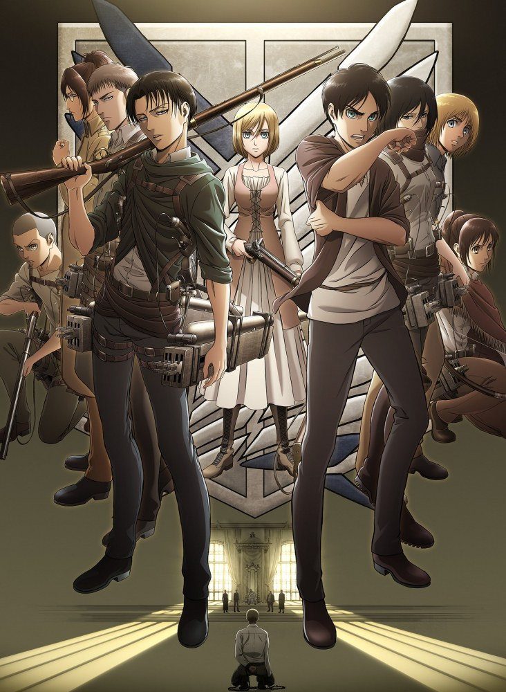
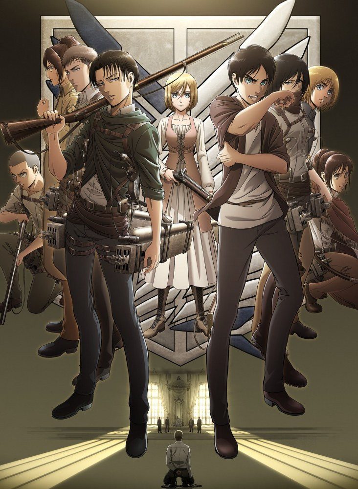

â’ 𝑪'𝒆𝒔𝒕 𝒒𝒖𝒐𝒊 ? â’
Le titre original est :Shingeki no Kyojin / 進撃の巨人. C'est un anime japonnais crée par Isayama Hajime en 2009. L'Attaque des Titans est à la base un manga et qui a était ensuite adapté en anime. Elle comporte 3 saisons et bientôt 4 (qui sera la saison finale) en décembre 2020.
 
